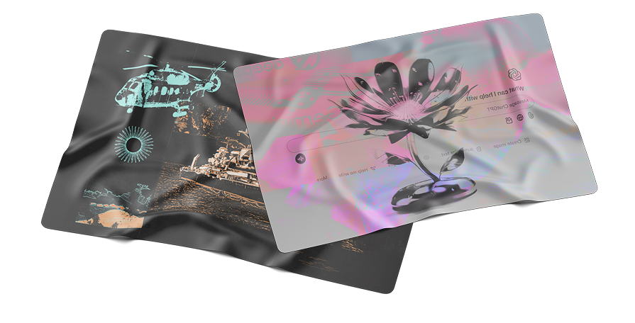

Notas Destacadas
Análisis, ensayos y reflexiones sobre ciencia, cultura y todo lo que hay en el medio.

Un futuro vivo
Pablo A. González, Juama Garrido
¿Por qué aspirar a una civilización biosolar y cómo empezamos a construirla?

ChatGPT: dos años después
Julián Peller
¿Fue la IA generativa una revolución? ¿Sigue revolucionando?
Yo no quiero volverme tan nazi
El Gato y La Caja
Acerca de decir “fascista†como insulto.
El dÃa que prendieron la luz
El Gato y La Caja, Juan Cruz Balian, Pablo A. González
Una historia de los nuevos medios digitales en Argentina a través de sus comunidades.

El gran búfalo
Juan Ignacio Arroyo
¿Qué tienen en común la Inteligencia Artificial, Vaca Muerta y el arado?

Gato: la historia completa, incompleta
El Gato y La Caja
La vida se vive hacia delante pero se comprende hacia atrás.

Acerca de trazar una lÃnea
El Gato y La Caja
Sobre las Elecciones Generales — Octubre 2023.

El rescate más austral
Eugenia Christiani
¿Cómo fue el rescate del ARA General Belgrano? Una crónica a través del testimonio de uno de los protagonistas.

Alfajor clandestino
RocÃo Priegue
¿El etiquetado frontal sirve o es menospreciar a los consumidores?
El dÃa que esté aburrido
Marina Amabile
¿Cómo cambió la forma en la que la televisión argentina muestra la homosexualidad y la transexualidad en los últimos treinta años?
OÃd mortales
El Gato y La Caja, Juan Cuiule, Pablo A. González
¿Quién es el artista más influyente de la música en español de Spotify? ¿Cómo lo medimos?

Los censos que supimos conseguir
Marina Amabile
¿Cómo fueron los censos argentinos a lo largo de la historia?

Otra medialuna
Ezequiel Arrieta
¿Sabemos qué estamos comiendo? ¿Es posible bajar nuestro consumo de grasas trans?
Un tranvÃa llamado Thanos
Nuria Cáceres, Facundo Alvarez Heduan
¿Cómo reaccionamos ante los desafÃos morales que trajo la pandemia?

Las pandémicas
RocÃo Priegue
¿Cómo han trabajado las mujeres a lo largo de la historia? ¿Qué pasó con las mujeres trabajadoras durante la pandemia?
El aura digital
Pablo A. González
¿Para qué sirve un NFT? ¿Solución para creadores digitales o mercado especulativo? ¿Futuro descentralizado o bomba climática?
Trabacaciones
RocÃo Priegue
¿No cuesta nada mandar un mail desde la playa? ¿Si al volver a trabajar te estresás de nuevo, de qué sirve tomarse vacaciones?
Pisar el césped
Ana Faggi, Nora Madanes
¿Cuántos metros cuadrados de espacio verde hay en tu ciudad?